Creative Embedded Systems, Project 2: Interactive Art
ALIEN RADIO
In this mini music game, explore the universe in search of alien radio stations playing alien music.
The button teleports you to new neighborhoods in the universe, the knob tunes your radio, and the joystick
moves you through the map. The screen displays the distance from each alien station, which appear
on the map once you come within 20 units of them. Station colors correspond to their channel frequencies -
try to tune your spacecraft to match, to get the clearest signal. Once you've found all four stations in this
neighborhood, feel free to teleport to a new neighborhood.
Our friendly neighborhood alien radio stations play four different types of music: ADDITIVE, GLOOPY, GRANULAR,
and BACKWARDS. Each neighborhood has its own subtle take on these genres - see if you can tell.
ARTISTIC VISION
This project idea was heavily influenced by the need to incorporate a potentiometer and a joystick.
The potentiometer made me think of a radio and tuning into frequencies, while the joystick made
me think of motion through a map. I also wanted to explore using jit.matrix objects in MaxMSP to create
interactive visuals, and I had aliens on the mind from discussing astrobiology for graduate school
programs. Eventually, I got the idea to tune into alien radio channels that would play different types of music.
I initially had the alien stations stay hidden throughout, but they were difficult to find without looking
at the distance measures and difficult to tune properly without looking at the frequency outputs. I therefore
decided to have the stations pop up on the map after discovery, as if you've marked them on the map.
The alien sounds themselves were created based on synthesis techniques I had previously explored
and wanted to play around with a bit more. This project gave me a good chance to experiment with building
small-scale patches focused on the very specific techniques of additive synthesis, delay, granular synthesis,
and reverse playback.
The hardware enclosure was designed to evoke both a physical radio and a handheld game controller, since it
functions as both.
REPRODUCTION
Reproduction information and tech specs are available at the github repo.
PATCH WALKTHROUGH
The main patch, alienradio.maxpat, is broken up into 15 sections.
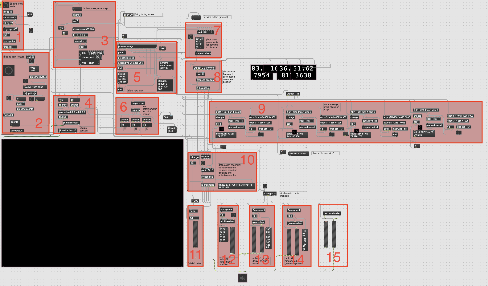
Section 1 parses values from the serial connection and separates out the button press,
joystick xval, joystick yval, joystick button, and potentiometer val. The metronome in
this section polls the serial connection every 10ms.
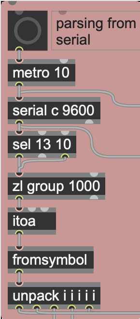
section 1
Section 2 processes the joystick readings. The first JavaScript object,
joystick.js,
turns the input values between 0-4095 into 0/1 for up/down motion, and 0/1 for left/right motion.
The second JavaScript object,
coords.js, takes
these values as input. It keeps track of the spaceship’s current coordinates, and updates them
according to the up/down/left/right motion. This update gets polled every 80ms by the metronome
in Section 2, which controls the speed of the spaceship.
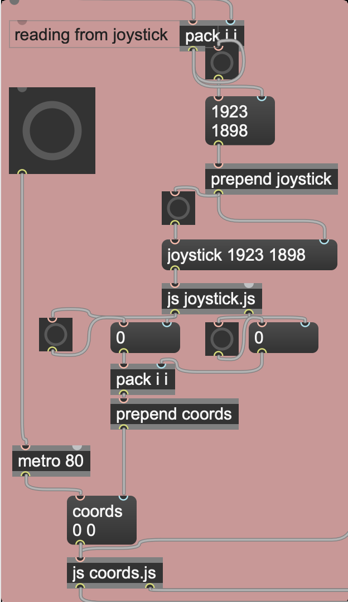
section 2
Section 3 processes the button press. It uses a trigger object to send out all the values
necessary to start all the tasks required to “teleport”: generate a new background of stars,
generate new alien station locations, generate new alien channel frequencies, and reset the
spaceship position to the center of the map.
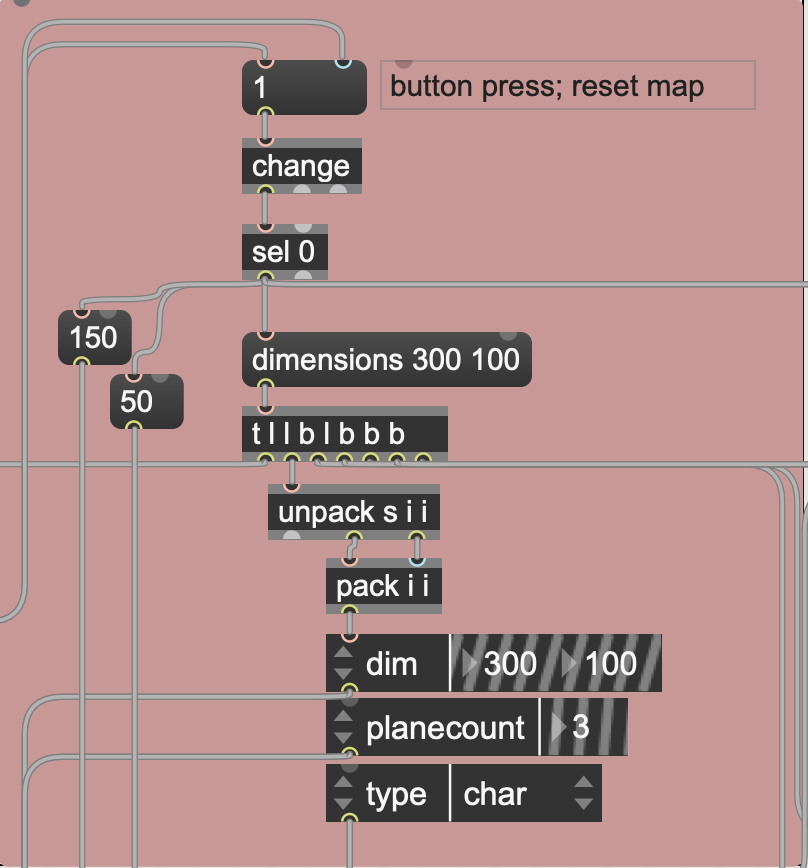
section 3
Section 4 displays the spaceship on the map. It takes updated spaceship coordinate values
from Section 2 (as well as the reset center coordinates from Section 3), and displays the spaceship
by toggling between two jit.matrix objects: imbuf1, which always only contains the background stars,
and imbuf2, on which the spaceship’s pixel is drawn.
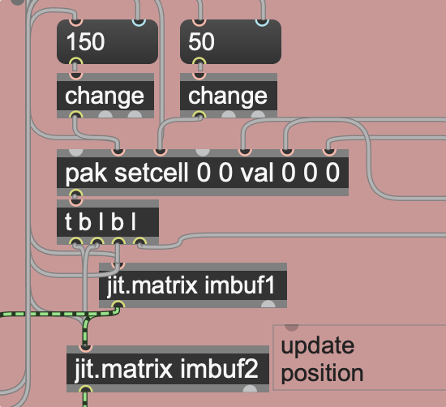
section 4
Section 5 generates the star background and the alien station locations. When the button is pressed,
Section 3 sends a bang to the JavaScript object
newspace.js, which outputs
random coordinates for the stars and alien station. The stars get drawn onto both jit.matrix objects.
The alien station coordinates are sent out to other sections.
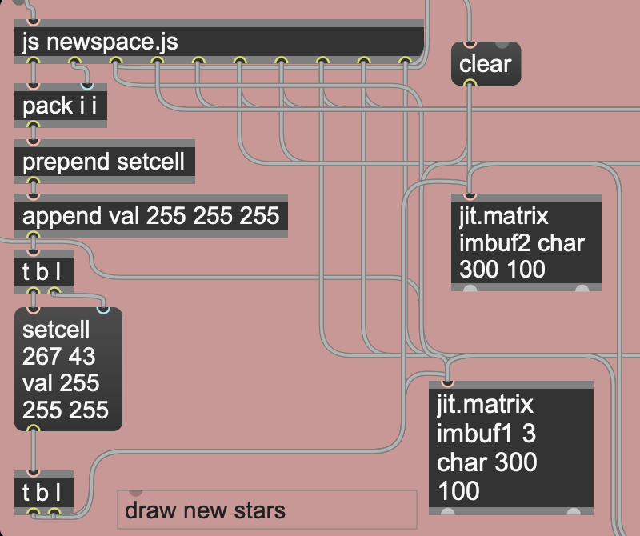
section 5
Section 6 processes the potentiometer readings. The JavaScript object
pot.js assigns RGB values
to the spaceship according to the readings, and also converts the reading into a radio channel
“frequency” that the spaceship is “listening” to (the frequency is the variable ‘filt’ in pot.js).
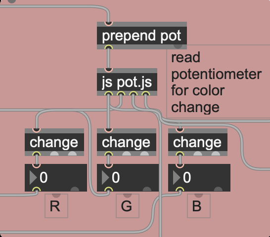
section 6
Section 7 simply takes the alien station coordinates from Section 5 and packs
them into a list, to send to Section 8.
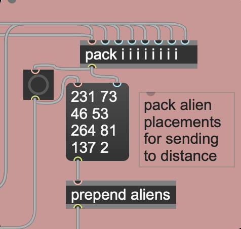
section 7
Section 8 calculates the spaceship’s current distance from each alien station.
The JavaScript object
distance.js
takes in the spaceship’s current coordinates as well as each of the alien station coordinates,
and it computes the Euclidean distance to each station.
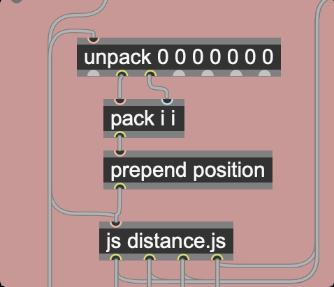
section 8
Section 9 marks the alien locations on the map once the spaceship reaches a proximity
of 20 distance units. It uses each alien stations’ channel “frequency” (calculated in Section 10)
to calculate the station’s RGB values, and draws the station’s pixel onto both jit.matrix objects
once the distance is less than 20.
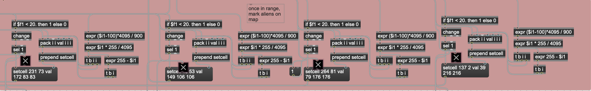
section 9
Section 10 generates each station’s channel frequency, and also calculates the volume of
each channel. When the button is pressed, Section 3 sends a bang to the JavaScript object
channel.js, which then
generates random channel frequencies. channel.js also takes in the current spaceship frequency
and the current distances to each alien station, and outputs volume such that the station is
louder when within 20 distance units, and loudest when it is within range and tuned into the
proper frequency. It also calculates the volume for the radio “static”.
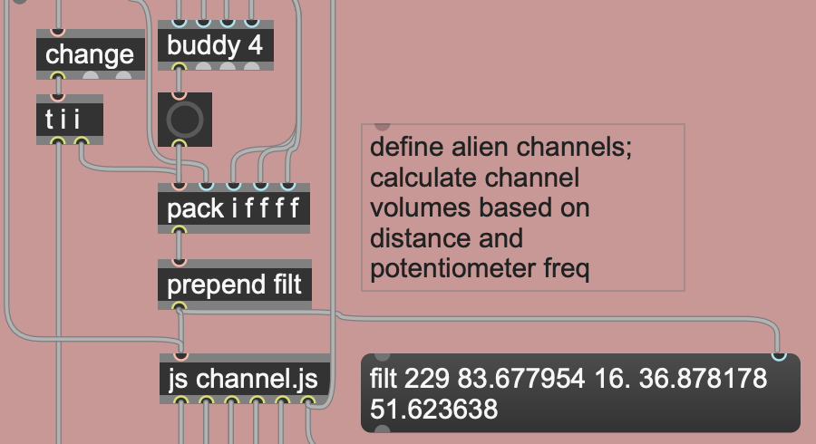
section 10
Section 11 controls the radio “static” sound. It consists of white noise through a
simple bandpass filter, whose filter frequency is controlled by the potentiometer.
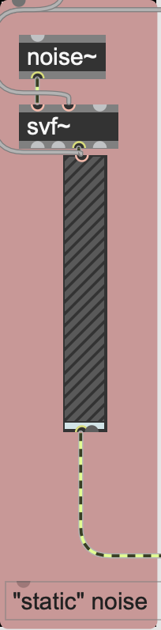
section 11
Sections 12-15 are the source of the alien radios’ sounds.
They each (except backwards-alien) take initial values generated by
seqgen.js
at each “teleport”.
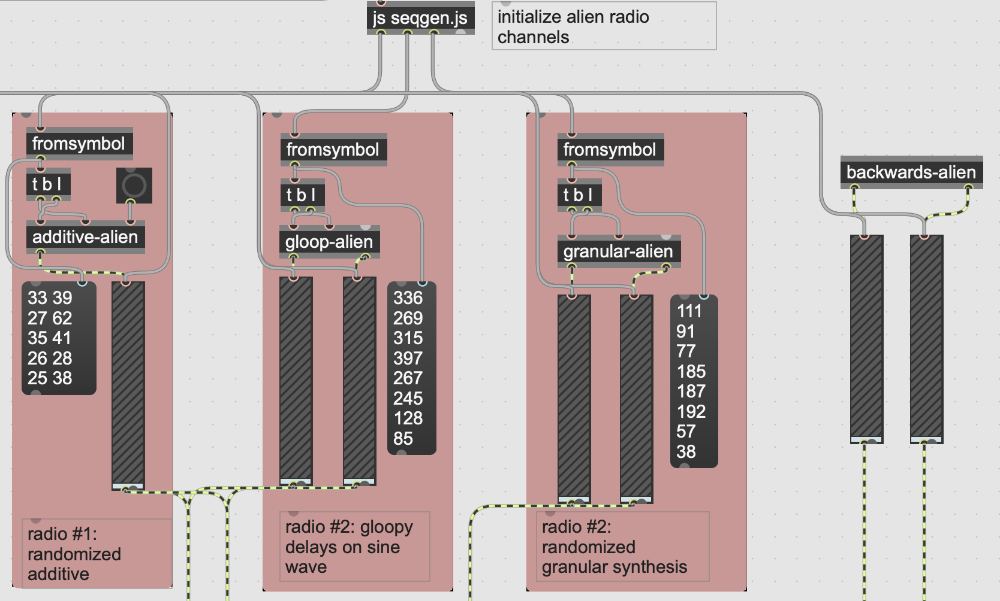
sections 12-15
SOUND PATCHES
1. ADDITIVE-ALIEN
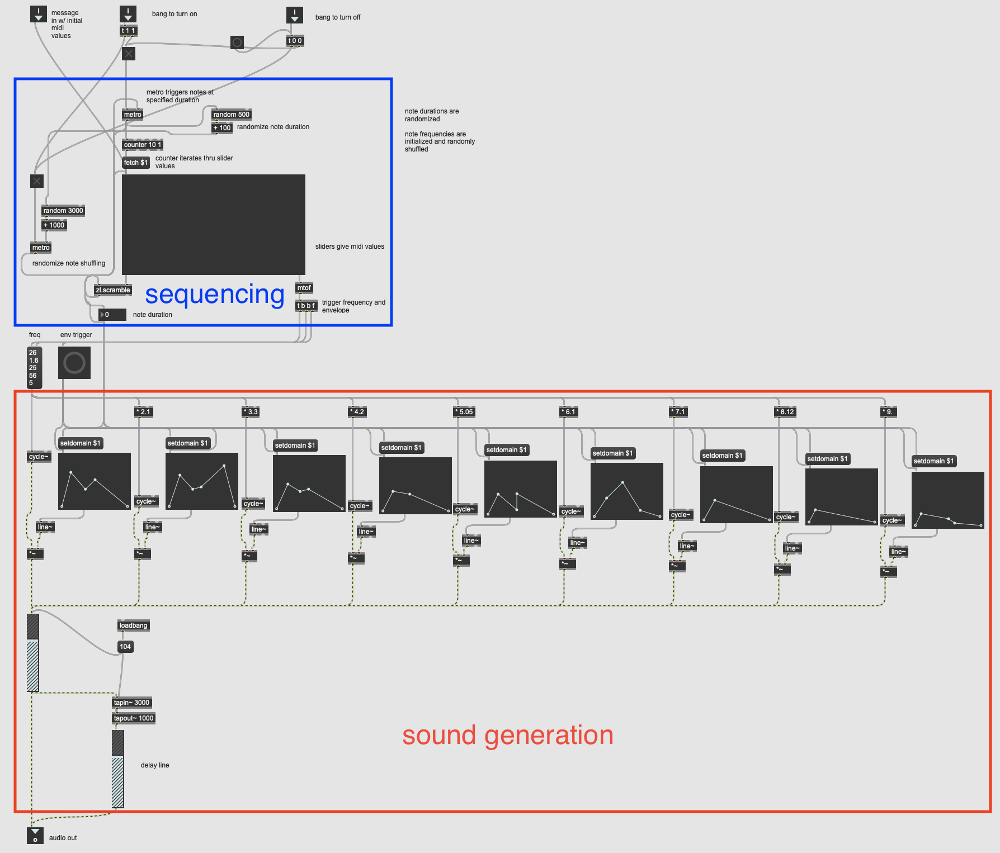
Sound generation: This first sound uses simple additive synthesis of ten sine waves,
each with its own amplitude envelope and frequency multiplier. It was developed with inspiration
from
this Youtube video.
I also added a very simple delay line. Sequencing: The sequencer takes ten initial frequency values, provided by
seqgen.js.
It randomizes the duration of each note, and also shuffles the order of the initial frequencies
at random intervals.
2. GLOOP-ALIEN
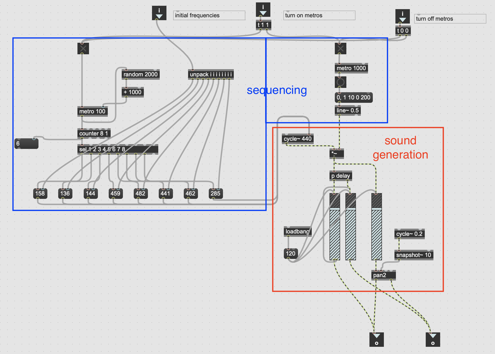
Sound generation: this sound uses a sine wave through a randomized delay
line developed from
this Youtube video
, and pans the dry signal with an LFO. Sequencing: The sequencer takes eight initial frequency values provided by
seqgen.js,
and sets the sine wave frequency at random times. The simple amplitude envelope is triggered every second.
3. GRANULAR-ALIEN
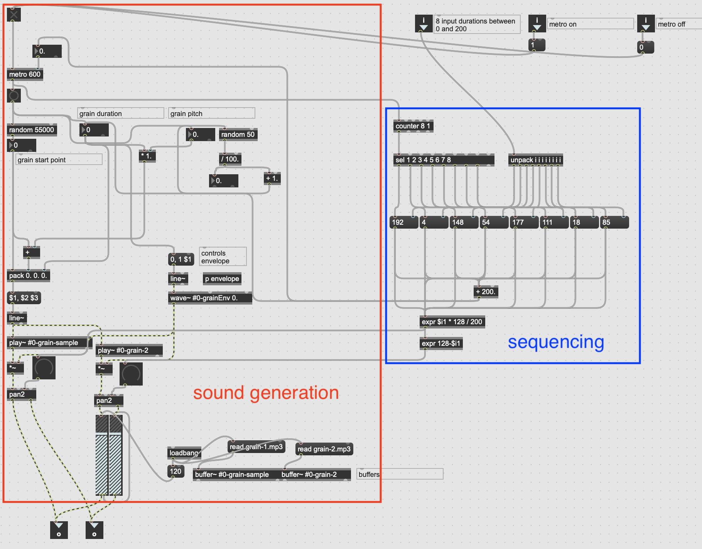
Sound generation: this sound samples two audio files,
grain-1.mp3 and
grain-2.mp3,
and performs granular synthesis developed from
this Youtube video
. I also added mirrored panning to both. Sequencing: The sequencer takes eight initial duration values provided by
seqgen.js,
and iterates through them at random intervals. These duration values are also used
to generate the pan values.
4. BACKWARDS-ALIEN
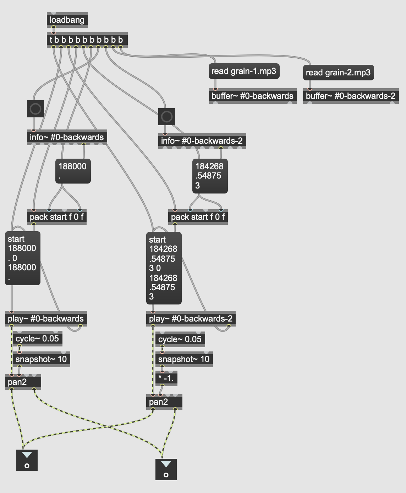
This very simple patch plays grain-1.mp3 and
grain-2.mp3 backwards, and pans them in opposite
directions with an LFO.